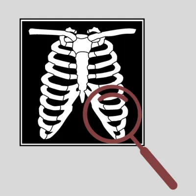

Hashara Kumarasinghe
PhD Candidate · Computational Phylogenomics Lab, School of Computing · The Australian National University
I work on computational phylogenetics — applying machine learning and high-performance computing to phylogenetic tree inference.
My current project is GPU-accelerated maximum likelihood phylogenetics in IQ-TREE 3, making large-scale evolutionary analysis practical on modern HPC clusters. It is supported by a TALO Computational Biology Innovator Grant.
Before starting the PhD I was a software engineer at Sysco LABS, working on cloud infrastructure with AWS, Terraform, Progress Chef and Jenkins, and contributing to an AIX-to-AWS migration covering more than 100 systems. I hold a BSc in Computer Science and Engineering from the University of Moratuwa.
Research
My doctoral research develops machine learning and high-performance computing methods for phylogenetic tree inference, in the Computational Phylogenomics Lab at ANU. I am currently implementing GPU-accelerated maximum likelihood estimation in IQ-TREE 3 so that large phylogenomic datasets can be analysed on modern HPC clusters.
Earlier work, during my undergraduate degree at the University of Moratuwa, applied deep learning to chest radiography for pneumonia and Covid-19 identification.
Preprints
Journal articles
-
2022
Chest X-ray analysis empowered with deep learning: A systematic review
Applied Soft Computing, p. 109319
-
2022
U-Net Based Chest X-ray Segmentation with Ensemble Classification for Covid-19 and Pneumonia
International Journal of Online and Biomedical Engineering (iJOE), vol. 18, no. 7, pp. 161–174
Conference papers
-
2022
Chest Radiographs Classification Using Multi-model Deep Learning: A Comparative Study
2nd International Conference on Advanced Research in Computing (ICARC), pp. 165–170
-
2021
MobileNetV2 Based Chest X-Rays Classification
International Conference on Decision Aid Sciences and Application (DASA), pp. 57–61
Peer review
-
—
Journal of Computational Biology
Projects
8-

Automated Radiography Analysis Framework Using Deep Learning for Pneumonia and Covid-19 Identification
-
Pump it Up: Data Mining the Water Table
-
Distributed Chat System
-
NCMS — WAKANDA
-
goSAFE
-
Online Bus Booking System
-
SmartEdkit
-
Healers
Experience
-
2022 – 2024
Software Engineer
Sysco LABS Sri Lanka · May 2022 – January 2024
- Learned new technologies on the job: Jenkins, Chef, AWS, Shell, Terraform.
- Added new functionality and modifications to existing Jenkins pipelines.
- Modified the existing Chef cookbook to support active-active highly available architecture.
- Implemented a Lambda function to schedule starting and stopping AWS instances.
- Modified existing Terraform code to provision new resources in AWS.
- Designed the failover process for active-active highly available architecture.
- Implemented new Jenkins pipelines supporting active-active highly available architecture.
-
2020 – 2021
Software Engineer Intern
CodeGen International (Pvt) Ltd · October 2020 – March 2021
Database data security project
- Implemented LDAP authentication for an in-house database security product that detects sensitive data, using Spring Security features.
- Quickly learned the existing code and extended system capabilities at both the Angular front end and the REST-API backend.
- Implemented support for multiple databases: MySQL and Oracle.
Oracle APEX BI dashboard project
- Set up Oracle Database and Oracle APEX environments and implemented an interactive BI dashboard for booking-related data analysis.
NLP project
- Annotated texts, updated gazetteer files and trained the in-house NLP engine to identify amenities from text.
Education
-
Current
Doctor of Philosophy
School of Computing, ANU College of Systems & Society
The Australian National University -
2017 – 2022
BSc Eng (Hons), Computer Science and Engineering
University of Moratuwa · GPA 3.70 / 4.20
First Class Honours · Dean's List for semesters 1, 6, 7 and 8 -
2021
SparkX Professional Development Program
SparkX Academy, Sri Lanka · Mar – Sep 2021
-
2014 – 2016
GCE Advanced Level
Devi Balika Vidyalaya, Colombo 08 · AAA · Island rank 158
Certifications
-
2025
Fundamentals of Accelerated Computing with OpenACC
NVIDIA · issued Feb 2025
-
2025
Getting Started with Accelerated Computing in CUDA C/C++
NVIDIA · issued Feb 2025
-
2025
Introduction to Concurrent Programming with GPUs
Coursera · issued Jan 2025
-
2021
Microsoft Certified: Azure Fundamentals
Microsoft · issued May 2021
-
2021
Neural Networks and Deep Learning
Coursera · issued Apr 2021
-
2020
Developing Applications with Google Cloud Platform (specialisation)
Coursera · issued Jul 2020 · four courses
-
2020
Other Coursera and Udemy certificates
Front-End Web UI Frameworks (Bootstrap 4) · AWS Fundamentals: Going Cloud-Native · API Design and Fundamentals of Google Cloud's Apigee API Platform · Web Application Security Testing with OWASP ZAP · Node JS API Development · React JS Frontend Web Development
Skills
Research areas
Parallel & HPC
Languages
Cloud & DevOps
Web
Data & tooling
Awards & activities
Grants
-
2026
TALO Computational Biology Innovator Grant
$10,000 over one year, for GPU-Accelerated Maximum Likelihood Phylogenetics in IQ-TREE 3: Enabling Large-Scale Evolutionary Analysis on Modern HPC Clusters · ANU TALO program
Awards & competitions
-
2019
Best Team Process
Code with WIE — hackathon organised by IEEE WIE Sri Lanka Section
-
2020
Winners
HackDown 2020 — coding competition organised by the IEEE WIE Student Affinity Branch of the University of Moratuwa
-
2019 – 2021
MoraXtreme
12-hour programming competition organised by the University of Moratuwa
- MoraXtreme 5.0 · rank 14
- MoraXtreme 4.0 · rank 14
- MoraXtreme 3.0 · rank 63
-
2018 – 2020
IEEEXtreme
24-hour programming competition organised by IEEE
- IEEEXtreme 14.0 · global rank 274
- IEEEXtreme 13.0 · global rank 464
- IEEEXtreme 12.0 · global rank 495
Service & outreach
-
2020 – 2021
Webmaster
IEEE Student Branch of the University of Moratuwa
-
2020 – 2021
Webmaster
Women in Engineering Symposium 2020 and 2021 — built the website for the International Women in Engineering Symposium using WordPress.
-
2020
Creative Content Team volunteer
IEEE SLSYW Congress 2020